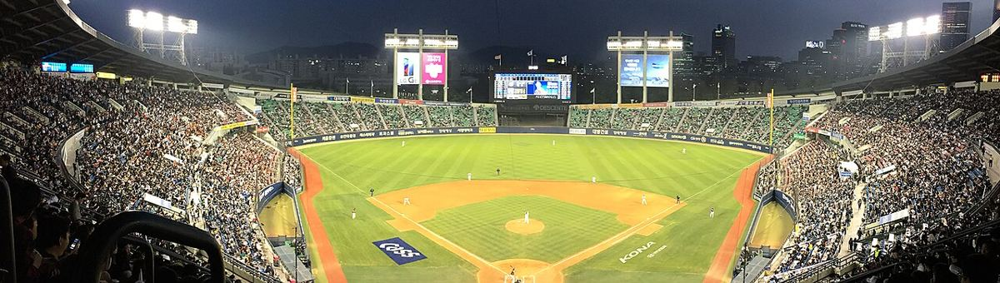
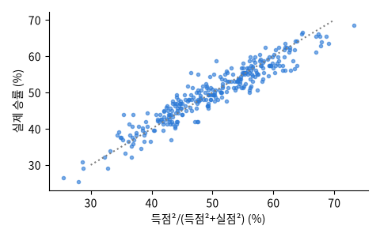

사진: Cyberdoomslayer · CC BY-SA 4.0Retrosheet 이 공개한 메이저리그 경기별 기록: 날짜 · 두 팀 · 점수 · 낮/밤 · 구장 · 관중 · 경기 시간 · 선발 투수. 2020 단축 시즌은 뺐다. The information used here was obtained free of charge from and is copyrighted by Retrosheet. Interested parties may contact Retrosheet at www.retrosheet.org.

| date | away | home | away_runs | home_runs | day_night | attendance | minutes |
|---|---|---|---|---|---|---|---|
| 2019-06-01 | SFN | BAL | 8 | 2 | D | 19,352 | 168 |
| 2025-04-25 | MIL | SLN | 2 | 3 | N | 24,437 | 149 |
| 2018-04-13 | ARI | LAN | 8 | 7 | N | 43,791 | 210 |
| 2023-09-14 | MIA | MIL | 2 | 4 | D | 26,529 | 153 |
| 2023-09-19 | CLE | KCA | 6 | 7 | N | 15,254 | 180 |
| 2017-09-29 | CIN | CHN | 4 | 5 | D | 36,258 | 176 |
| 열 | 종류 | 빈칸 | 고유값 수 | 범위 · 대표값 |
|---|---|---|---|---|
| date | 글자 · 범주 | 0 | 1818 | 가장 흔한 값: 2015-09-30 (0.1%) |
| away | 글자 · 범주 | 0 | 31 | 가장 흔한 값: BAL (3.3%) |
| home | 글자 · 범주 | 0 | 31 | 가장 흔한 값: TBA (3.3%) |
| away_runs | 숫자 | 0 | 27 | 0 ~ 28 (평균 4.448) |
| home_runs | 숫자 | 0 | 25 | 0 ~ 25 (평균 4.537) |
| day_night | 글자 · 범주 | 0 | 2 | 가장 흔한 값: N (64.5%) |
| attendance | 숫자 | 0.0% | 18,046 | 0 ~ 91,032 (평균 28,045.0) |
| minutes | 숫자 | 0 | 251 | 83 ~ 413 (평균 178.9) |
늘 50% 보다 조금 높다: 홈 이점 (2020 단축 시즌은 뺐다)
점수만 알아도 승률이 거의 맞는다 (빌 제임스)
| ① 한 행 | 경기 하나 |
| ② 입력 X | 두 팀의 그 경기 전까지 승률 · 경기당 득실차 · 최근 10경기 승률 |
| ③ 출력 y | 홈팀이 이기나 (확률) |
| ④ 평가지표 | 정확도, 로그 손실 |
| ⑤ 기준선 | 늘 홈팀 승 (약 53%) |
문제를 정할 때 처음 채워 보는 칸들입니다. 여기서 끝이 아니라, 시험 데이터를 어떻게 나눌지 · 틀렸을 때 손해가 얼마인지 · 예측 시점에 정말 알 수 있는 값인지 같은 칸을 더 붙일수록 좋은 문제가 됩니다.
team-season win % vs Pythagorean: correlation 0.946, MAE 3.5 wins per 162 games always home accuracy 53.2% log loss 0.6912 better record so far accuracy 54.0% d_wpct accuracy 55.0% log loss 0.6841 d_wpct + d_rd_pg accuracy 55.4% log loss 0.6827 d_wpct + d_rd_pg + d_last10 accuracy 55.6% log loss 0.6827
누가, 왜, 어떻게 만든 데이터인지 직접 확인해 보세요.
프로젝트 주제를 고를 때 참고하세요 (일반적인 예시).